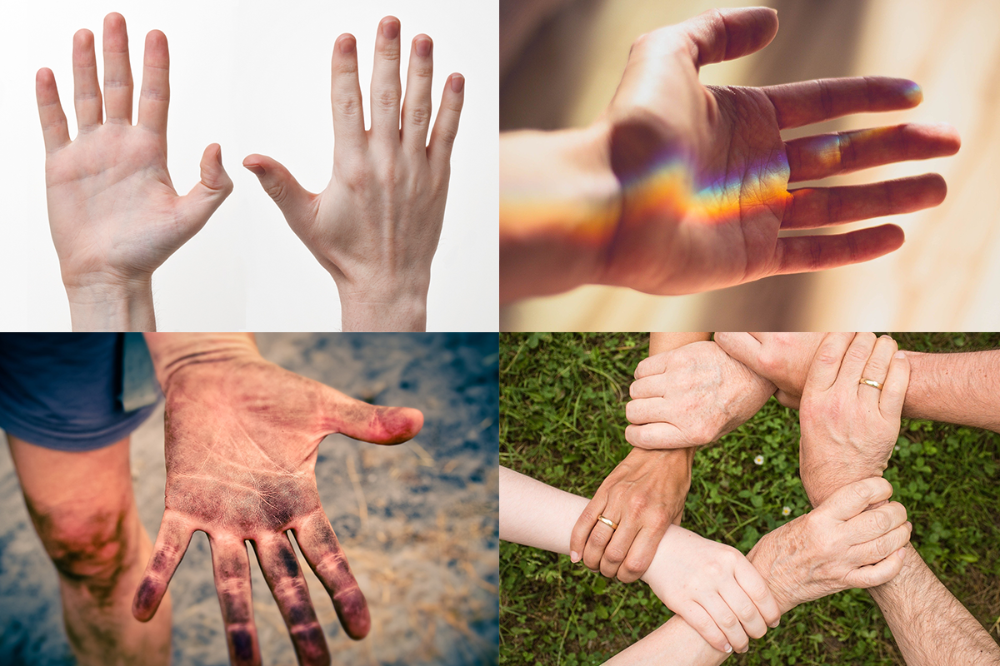
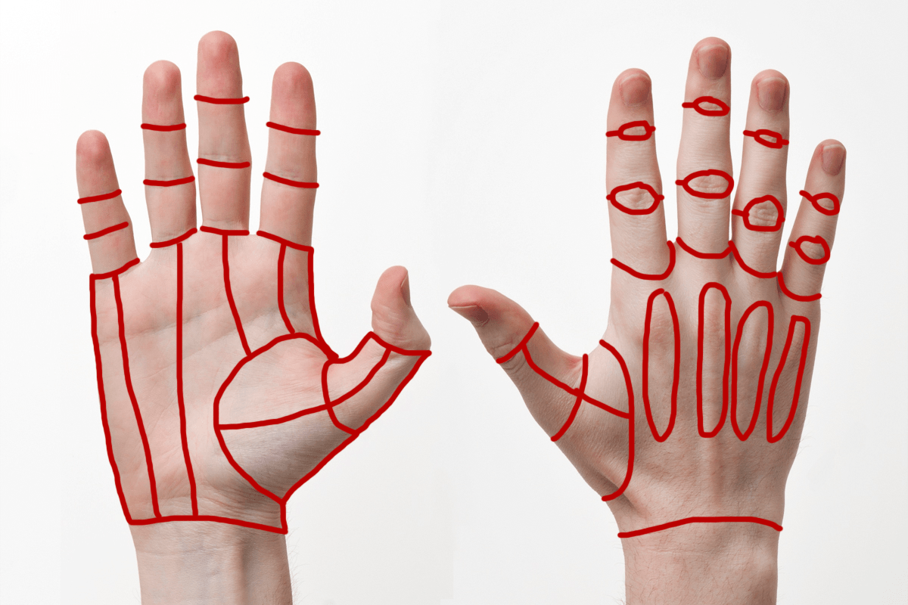
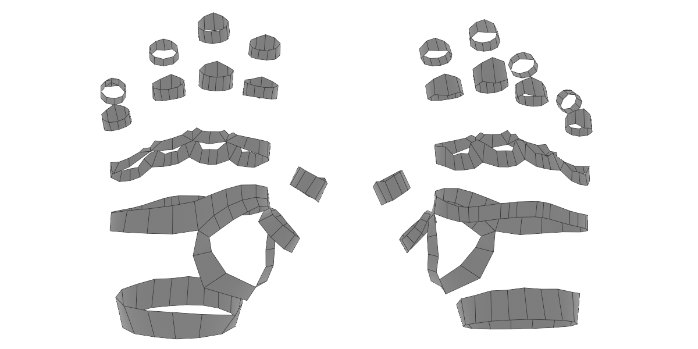
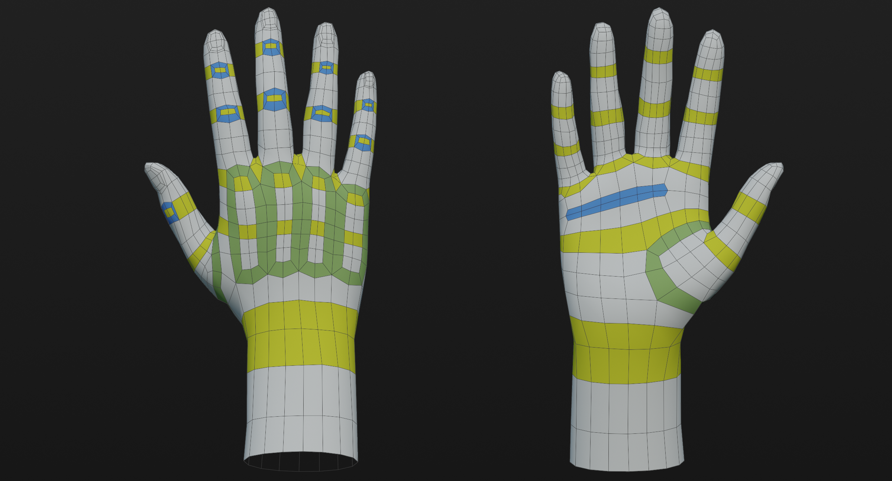

Modeling a Human Hand
Today we’re going to take a look at a very common modeling task modeling hands. Hands are one of the most complex shapes on the human body to model. An arm is one thing, but another five appendages? Topology and mesh density can quickly get out of hand (pun intended). Furthermore, animated ready hands must be ready to deform in almost any shape while still looking good.
So without further ranting, here’s a couple tips for modeling your next hand. Once you reach the bottom, you can also download the final hand with loop flow notes using the Sketchfab link.
Reference…Reference….Reference!
Organic forms, especially those we’re most familiar with, require acute attention to reference. It’s easy to take as granted that we know what a human hand looks like, but once you begin modeling, it’s easy to assume forms and end up in the uncanny valley. Even when working with base meshes, reference is a necessity. Base meshes are all about recognizing the major forms of a model, that means paying attention to muscle and bone structure is just as important at this step as it is for sculpting or texturing.

For example, while working on this post, I initially modeled the back of the hand with inset loops near the knuckles, but after looking at my own hand, I realized that it would be more accurate to have the loops extend downwards across the hand because the whole area deforms in certain positions.
TLDR: Check your reference…and then check it again.
Identify Primary Loops
The human hand has a lot of primary loop locations. This is why it’s a safe bet to start identifying these before you build out much of the model. A great way to do this is by using the grease pencil tool over your reference image. Mark out anywhere that should have clean loops of edges. For example, the wrist, fingers, knuckles, and thumb pad. Marking these will help you avoid redoing work correcting edge loops that flow in the wrong ways.

Once you’ve marked your main loops build them out using geometry. You can automate this using something like Retopoflow. Remember to check your edge count in loops. Each finger should have the same number of loops. Sticking to multiple of 4 for loops is also general good practice. Pay special attention to the loop count of the wrist; 16 is generally plenty and will be at least close to the loop count of whatever arm you attach.
Do the Easy Stuff First
Next, use the loops you made to fill in the areas between them. If you see a problem coming at a loop transition, leave it and work on filling as much clean topology as you can. If you work too much to make a good transition area, only to need to fix it again, modeling can get frustrating very quickly. You’ll likely see most problems at the base of the thumb and between the fingers.
Fix Tricky Loop Transitions
Now you should have enough topology to know what your transition points need to be like. Now your topology skills really come into play. There is no fix all solution to transition points, but these principles are good guides: First, check your loop flows. The easiest way to get in a mess is linking one end of a loop to the wrong point on the opposite end. Second, learn loop reduction flows. These will be essential to ending flows so you don’t end up with dozens of edge loops at the wrist. And Lastly, persevere. Sometimes you just gotta keep trying new things until it works. Don’t be afraid to delete topology.

Make Your Rig Happy
Last, but not least, add deformation areas and make your rig (or rigger) happy. Deformation areas (marked in blue) help topology stretch properly in extreme positions. The best way to add these areas is to outset a grouping of faces by pressing I then O and adding a small loop around the area that needs extra geometry. Generally, the tops of joints need the most extra geometry. in some cases, it can be easier to add more loops instead, but this can also create extra to geometry to compress inside the joint.
Below you can see the final result and the main edge flow highlighted. You can also download the model from Sketchfab here.

If you enjoyed this post, please consider supporting the site on Patreon help pay for website costs and give me motivation to keep writing guides!